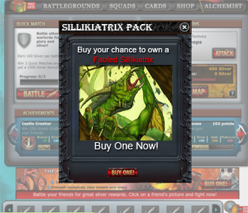

Porfolio
This is a collection of things I've mocked, made, and built. In order from latest to oldest.
Click on titles for full info.
4/14/2011
I was applying for a Project Management position at Bebo. I was interviewed by the CTO, Akash Garg, and was then asked to provide some mocks of what I think can be a good direction for Bebo Mobile, and to also generally see how I work.Here is what I came up with:
The old Bebo Mobile. Was in need of a UI update. |
My version of what the new Bebo app could look like. |
4/4/2011
Here are some of the snapshots of the In-Game Marketing Initiatives I came up for the Zynga Game Warstorm.
Website Redesign for Eventbee.com
2/11/2011
I designed a brand new website design to improve the UI and marketing potential of Eventbee's ticketing system. After some iterations, the final look did get implemented. I also designed a couple of rotating banners for the landing page.The way Eventbee.com looked before I consulted. |
What I designed for the website revamp. |
One of the banners for the landing page
Wireframes for Venue Deals Management for Punchd
9/22/2010
Here are a series of wireframes for the process of Venue's Deal Management for Punchd. These were tentative designs.Hooked Media Group Collaterial